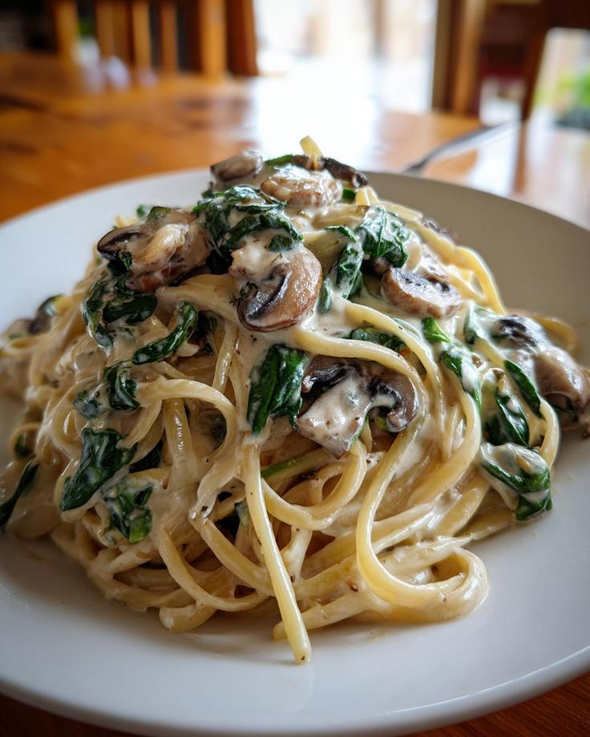

Mushroom Pasta
A dish we all love

A rich and comforting pasta dish made with sautéed mushrooms, garlic, and a creamy parmesan sauce.
It’s simple, flavorful, and perfect for a quick dinner.
Ingredients
- 250g pasta (fettuccine or spaghetti)
- 2 tablespoons butter
- 2 tablespoons olive oil
- 3 cloves garlic, minced
- 200g mushrooms, sliced
- 1 cup heavy cream
- 1/2 cup grated parmesan cheese
- Salt and black pepper to taste
- 1 teaspoon dried oregano or thyme
- Fresh parsley, chopped (for garnish)
Steps
- Cook the pasta in salted boiling water according to the package instructions. Drain and set aside.
- Heat olive oil and butter in a large pan over medium heat.
- Add the garlic and cook for about 30 seconds until fragrant.
- Add the sliced mushrooms and cook until they become soft and slightly browned.
- Pour in the heavy cream and let it simmer for 2–3 minutes.
- Stir in the parmesan cheese, oregano, salt, and pepper.
- Add the cooked pasta to the sauce and toss until well coated.
- Garnish with fresh parsley and extra parmesan before serving.
Home